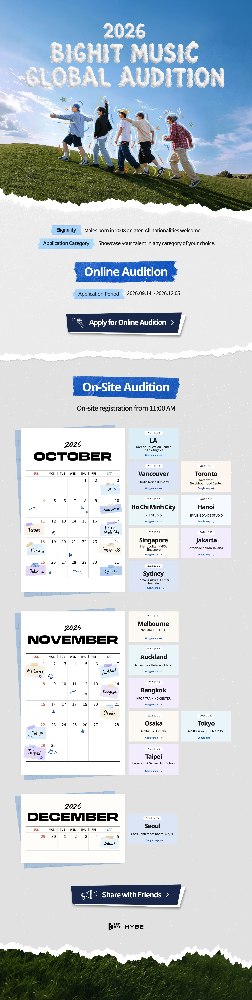

moonlight09
The whole arena became a constellation tonight.
That fan project felt like magic from the first song.The whole arena became a constellation tonight.
That fan project felt like magic from the first song.YOUR FANDOM POWER
Static preview · sample ranking
FAN ACCOUNT
@moonlight09
Concert memories, comeback playlists, and the little moments that make being a fan special.

